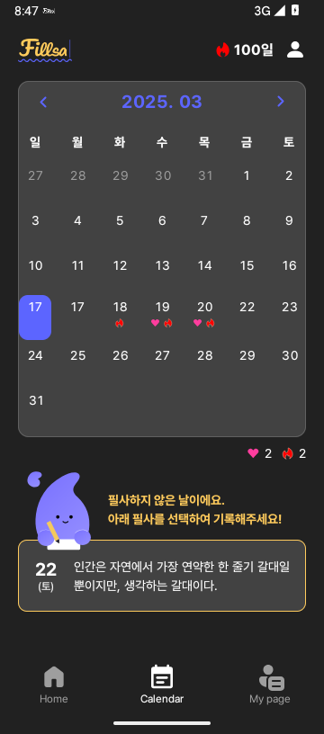

필사하지 않음 > text, area 컬ㄹ러
Notion 원본 이슈
원문 속성: Status Not started · Priority 중간 · Device Android · 화면 Calendar · Category UI
페이지 본문 블록 0건(빈 본문). 증상은 댓글에 기록되어 있다.
페이지 본문 첨부 없음. 댓글 첨부는 아래에 보존했다.
Notion 댓글
문제와 재현 조건
다크 Calendar에서 필사하지 않은 2025-03-17을 선택한다. 안내 문구와 하단 80dp 명언 카드 테두리를 Figma 3039:25079, 3039:25073과 비교한다. Light 상태는 회귀 범위다.
이슈 원인
CalendarEmptyDay의 두 Text가 다크일 때 Color.White를 사용했고 CalendarQuotePreviewCard의 border가 항상 purple01이었다. 기존 yellow02가 Figma의 #FFCB5C와 일치한다.
해결방법과 실제 수정
CalendarQuoteSection.kt에서 다크 안내 문구·카드 테두리에 yellow02를 적용했다. Light는 purple01이다. 결정적 하위 Preview 4개를 추가했다. 실제 앱 검증을 위해 MainActivity.kt의 기존 Calendar QA fixture에서 Dark override를 허용했다. 상태·API·데이터 계약 변경은 없다.
수정 전 · 목표 기준 · 수정 후
AS-IS · 수정 전 실제 결과

Figma · 목표 기준

TO-BE · 수정 후 실제 결과

검증 결과
| 검증 항목 | 실행 명령·절차·시각 | 실제 결과 | 증거 |
|---|---|---|---|
| 기준 테스트 | ./gradlew :presentation:testDebugUnitTest | Pass | Gradle BUILD SUCCESSFUL |
| 변경 후 빌드·테스트 | ./gradlew :app:assembleDebug :presentation:testDebugUnitTest | Pass | Gradle BUILD SUCCESSFUL |
| 하위 Preview | android preview render :presentation --fqn=<각 Preview> --component-tree | Dark 목표색, Light 기존색 확인 | QA 기록·이미지·tree |
| 실제 앱 전체 프레임 | adb API 35, 360×816, Dark fixture 캡처 | 대상 색상 일치, 화면 전체 차이 잔존 | 런타임 캡처 |

UI QA 판정
Round 1: 안내·카드 Dark/Light 하위 Preview를 먼저 확인한 뒤 Dark/Light 조립 Preview와 Dark 런타임 전체 프레임을 비교했다. 다크 문구·테두리는 Figma #FFCB5C와 일치한다. 전체 360×816 프레임에는 기존 달력 표면, 광고와 OS 영역 차이가 있다. 이번 이슈의 하위 컴포넌트는 통과, 전체 조립 최종 결과는 보류다. 자세한 비교와 component tree는 QA 기록을 참조한다.
남은 항목과 다음 행동
화면 전체의 기존 Figma 차이는 별도 범위에서 수정·재검증해야 한다. 이번 색상 이슈를 근거로 Notion 상태를 바꾸지 않았다.